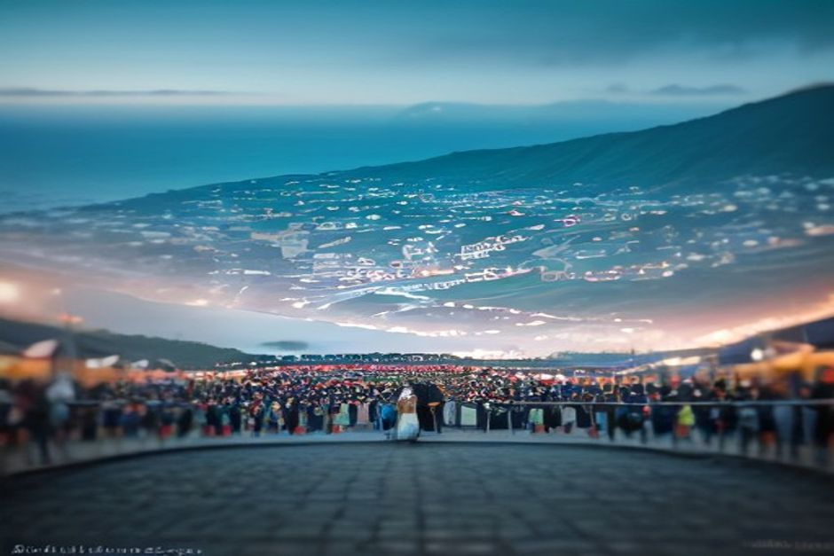

Todos os anos, em setembro, a pequena freguesia do Faial, na costa norte, enche-se de flores, bandas filarmónicas e fogo de artifício durante três dias seguidos. A Festa do Faial é uma das festas populares mais marcantes da Madeira — precisamente por não ser pensada para turistas. Aqui fica quando acontece em 2026, o que realmente se passa e como chegar a partir do Funchal.
Quando é a Festa do Faial em 2026?
A festa decorre de 12 a 14 de setembro de 2026 no Faial, freguesia do concelho de Santana, na costa norte da Madeira. Realiza-se em honra de Nossa Senhora da Natividade, padroeira da freguesia, e as datas situam-se perto do seu dia, 8 de setembro, a referência tradicional das festas de padroeiro ligadas às colheitas em toda a ilha.

O que é a Festa do Faial, e para quem é?
É, antes de mais, uma festa de freguesia, e nota-se. Ao contrário dos eventos maiores e mais organizados do Funchal, a Festa do Faial é organizada pela igreja local e por associações da comunidade para as cerca de 1.500 pessoas que vivem na freguesia — e para as famílias alargadas que regressam de outros pontos da ilha, ou da diáspora madeirense no estrangeiro, propositadamente para ela. Músicos nacionais e regionais atuam num palco ao ar livre, mas o centro emocional do fim de semana é a vertente religiosa: novenas nos dias anteriores, missa solene e a procissão que leva a imagem de Nossa Senhora da Natividade por ruas ornamentadas com flores e arcos triunfais.
Porque é que se realiza sob a Penha d'Águia?
Porque é impossível não a ver. O Faial fica mesmo por baixo da Penha d'Águia — "Rocha da Águia" — um monólito vulcânico com quase 600 metros que separa a costa entre o Faial e a vizinha Porto da Cruz. É um dos marcos mais reconhecíveis da costa norte, e transforma o cenário da festa num anfiteatro natural: o fogo de artifício da última noite explode contra um pano de fundo de rocha escarpada e Atlântico escuro, em vez de luzes de cidade — o que explica, em parte, a fama que a Festa do Faial tem entre os madeirenses como uma das festas populares mais impressionantes para se viver ao vivo.
O que acontece, na prática, ao longo dos três dias?
O programa segue o ritmo habitual de um arraial, espalhado de sábado a segunda-feira. Os dias abrem com missa e continuam com a feira de rua — bancas a vender espetada, bolo do caco, bolo de mel e vinho da região — a par de música ao vivo que vai de grupos de folclore tradicional madeirense a artistas de pop e pimba em digressão, no palco principal. A procissão religiosa, o ponto alto do fim de semana, cai normalmente no dia do meio: a imagem é levada lentamente pela freguesia atrás de uma banda filarmónica, junto a casas cobertas de flores, com boa parte da vila a caminhar nela ou a assistir das portas. A festa fecha na última noite com um fogo de artifício pensado para terminar a celebração em grande.
Como se chega ao Faial a partir do Funchal?
O Faial fica a cerca de 21 km a norte do Funchal, e a viagem de carro demora cerca de 45 a 60 minutos, consoante o percurso — a sinuosa estrada costeira ER101, que passa por São Vicente, ou a via rápida VE1/VE5, mais rápida, que atravessa em túnel as montanhas centrais da ilha. Não há um serviço de autocarro expresso pensado para as noites de festa, por isso um carro alugado ou um táxi são a opção prática, e o estacionamento fica apertado numa vila deste tamanho quando a feira está no auge — chegar a meio da tarde, antes de a multidão se juntar para os eventos da noite, é a forma mais fácil de entrar. Vale a pena planear como um dia à parte: o Faial fica bem para lá do troço de costa que um barco privado a partir da Marina do Funchal consegue realmente cobrir, por isso um passeio de barco privado com a Chifbay pela costa sudoeste, mais próxima — Câmara de Lobos, Cabo Girão, Fajã dos Padres — faz uma manhã natural, deixando a viagem até ao Faial para a tarde e a noite.
Vale a pena visitar o Faial fora dos dias de festa?
Sim, e discretamente. A freguesia é uma vila de trabalho da costa norte, não uma paragem turística, com vinhas em socalcos, bananais e uma costa que não se parece nada com a do Funchal. A curta caminhada até ao Miradouro do Guindaste, mesmo à saída da vila, oferece uma das melhores vistas deste troço de costa — a Penha d'Águia de um lado, o Atlântico aberto do outro. Uns minutos mais à frente pela ER101, Porto da Cruz tem uma praia de areia negra, uma piscina natural e um spot de surf de longa data, o que a torna um par fácil para quem sobe até à festa e quer transformar o dia numa exploração mais completa da costa norte.
O Faial acende o seu fogo de artifício contra uma montanha que a maioria das festas só pode sonhar ter como cenário.
A Festa do Faial não é feita para visitantes, e é exatamente por isso que atrai — uma verdadeira festa de freguesia, sob um dos marcos naturais mais imponentes da Madeira, que por acaso está aberta a quem estiver disposto a fazer a viagem até norte.